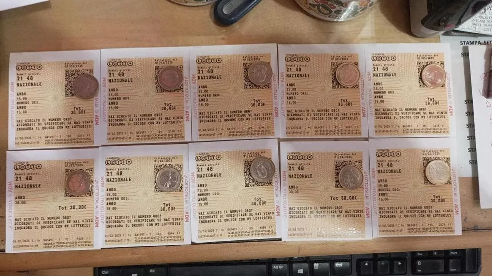
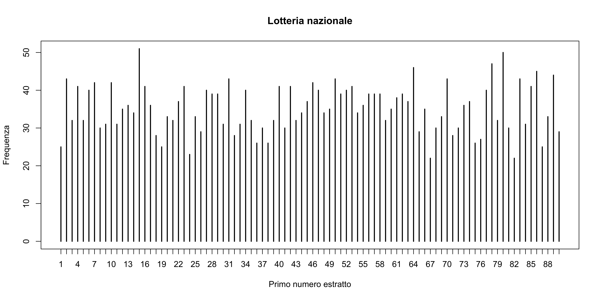

| Data | N1 | N2 | N3 | N4 | N5 |
|---|---|---|---|---|---|
| 2025-02-28 | 14 | 78 | 18 | 40 | 8 |
| 2025-03-01 | 21 | 48 | 3 | 17 | 62 |
| 2025-03-04 | 57 | 54 | 79 | 44 | 40 |
| 2025-03-06 | 34 | 83 | 53 | 81 | 14 |
| 2025-03-07 | 45 | 81 | 88 | 30 | 28 |
La lotteria nazionale non è difettosa
Un’analisi delle estrazioni della lotteria nazionale
Dopo la pubblicazione di un mio post di qualche giorno fa riguardante la lotteria nazionale, alcuni commentatori social (si, forse dovrei smettere di leggerli) hanno messo in discussione la validità delle ipotesi su cui si regge le lotteria, ed in particolare l’equiprobabilità dei numeri del lotto. In altri termini, secondo loro, alcuni numeri avrebbero maggiore probabilità di essere estratti rispetto ad altri.
Se ciò fosse vero, significherebbe che i dipendenti della lotteria hanno per anni commesso un grave errore, fatto che probabilmente avrebbero ripercussioni legali importanti. In buona sostanza, l’ipotesi alternativa di alcuni commentatori è che il macchinario con cui vengono estratti i numeri sia “difettoso” e che questo favorisca alcuni numeri rispetto ad altri.
Sebbene l’onere della prova dovrebbe spettare a chi muove questa accusa, ho deciso ugualmente di prendere le parti della difesa e di analizzare i dati a disposizione.
Dopo aver studiato i dati della lotteria nazionale degli ultimi 20 anni, non ho registrato alcun tipo di anomalia statistica. In altri termini, non c’è evidenza di alcun macchinario difettoso.
Un problema storico
Il problema dell’equità di una lotteria ha una lunga e importante storia, che è elegantemente raccontata nell’articolo di storia della statistica di Stigler (2003)1:
- Stigler S. M. (2003), Casanova, «Bonaparte», and the loterie de France, Journal de la société française de statistique, 144(1-2), 5–34.
Gli strumenti statistici che qui presenteremo sono simili a quelli usati da Stigler per analizzare la lotteria francese del 18esimo secolo. L’articolo di Stigler è molto più completo e dettagliato di questo post, e ne consiglio caldamente la lettura. Anzitutto, è una testimonianza importante di quanta intelligenza sia già stata dedicata alla questione della lotteria, oltre che esempio di come la statistica possa risolvere problemi concreti.
I dati della lotteria nazionale
I dati delle estrazioni del Lotto sono a disposizione sul sito ufficiale del Lotto a partire dalle estrazioni del 1939. La lotteria nazionale inizia invece dal 5 Maggio 2005, cioè la data della prima estrazione nazionale. Questa analisi è replicabile da chiunque avesse interesse a farlo.
Per dare un po’ di contesto, i 3 studenti dell’Università del Salento hanno scommesso sui numeri 21 e 48 della lotteria nazionale in data 1 Marzo 2025, vincendo, come si può vedere nella fotografia allegata.

A titolo di esempio, le ultime cinque estrazioni sono state:
A detta stessa dei 3 studenti e di alcuni commentatori dei social, ci sarebbero delle anomalie nelle frequenze dei numeri del lotto. Ho calcolato le frequenze di ciascun numero, per verificare questa affermazione e non ho riscontrato anomalie. Per semplicità, qui di seguito riporto le frequenze del primo numero estratto (N1).
| 1 | 2 | 3 | 4 | 5 | 6 | 7 | 8 | 9 | 10 | 11 | 12 | 13 | 14 | 15 |
|---|---|---|---|---|---|---|---|---|---|---|---|---|---|---|
| 25 | 43 | 32 | 41 | 32 | 40 | 42 | 30 | 31 | 42 | 31 | 35 | 36 | 34 | 51 |
| 16 | 17 | 18 | 19 | 20 | 21 | 22 | 23 | 24 | 25 | 26 | 27 | 28 | 29 | 30 |
|---|---|---|---|---|---|---|---|---|---|---|---|---|---|---|
| 41 | 36 | 28 | 25 | 33 | 32 | 37 | 41 | 23 | 33 | 29 | 40 | 39 | 39 | 31 |
| 31 | 32 | 33 | 34 | 35 | 36 | 37 | 38 | 39 | 40 | 41 | 42 | 43 | 44 | 45 |
|---|---|---|---|---|---|---|---|---|---|---|---|---|---|---|
| 43 | 28 | 31 | 40 | 32 | 26 | 30 | 26 | 32 | 41 | 30 | 41 | 32 | 34 | 37 |
| 46 | 47 | 48 | 49 | 50 | 51 | 52 | 53 | 54 | 55 | 56 | 57 | 58 | 59 | 60 |
|---|---|---|---|---|---|---|---|---|---|---|---|---|---|---|
| 42 | 40 | 34 | 35 | 43 | 39 | 40 | 41 | 34 | 36 | 39 | 39 | 39 | 32 | 35 |
| 61 | 62 | 63 | 64 | 65 | 66 | 67 | 68 | 69 | 70 | 71 | 72 | 73 | 74 | 75 |
|---|---|---|---|---|---|---|---|---|---|---|---|---|---|---|
| 38 | 39 | 37 | 46 | 29 | 35 | 22 | 30 | 33 | 43 | 28 | 30 | 36 | 37 | 26 |
| 76 | 77 | 78 | 79 | 80 | 81 | 82 | 83 | 84 | 85 | 86 | 87 | 88 | 89 | 90 |
|---|---|---|---|---|---|---|---|---|---|---|---|---|---|---|
| 27 | 40 | 47 | 32 | 50 | 30 | 22 | 43 | 31 | 41 | 45 | 25 | 33 | 44 | 29 |
In totale sono state effettuate n = 3171 estrazioni. Ad un occhio poco esperto, potrebbe sembrare che i numeri 15 ed 80 compaiano con maggiore frequenza rispetto agli altri (51 volte e 50 volte, rispettivamente). È anche ironico notare che non si tratta dei numeri (21 e 48) usati nella famosa scommessa – non saprei proprio dire quale criterio abbiano seguito i tre studenti salentini. In ogni caso, si tratta di oscillazioni casuali, come vedremo.
Possiamo anche rappresentare graficamente queste frequenze, ottenendo il seguente diagramma a bastoncini.

Oscillazioni casuali o lotteria difettosa?
Per stabilire se le oscillazioni che abbiamo registrato sono frutto del caso o meno, dobbiamo usare degli strumenti statistici un po’ più complicati. Sotto l’ipotesi di indipendenza delle estrazioni, ma non quella di equidistribuzione, la frequenze che abbiano riportato sopra, che indichiamo con n_1,\dots,n_{90}, seguono una distribuzione multinomiale di parametro n = 3171 e probabilità p_1,\dots,p_{90}.
Vogliamo verificare se le probabilità p_1,\dots,p_{90} sono diverse tra loro, cosa che indicherebbe la presenza di un macchinario “difettoso”, oppure se sono uguali tra loro e pari a 1/90. Per far questo, facciamo uso del celeberrimo test del Chi-quadrato2. In pratica, confrontiamo le frequenze che abbiamo osservato n_1,\dots,n_{90} con quelle “teoriche”, pari a n_\text{teo} = n / 90 = 35.233. Otteniamo: X^2 = \frac{(n_1 - n_\text{teo})^2 + \cdots + (n_{90} - n_\text{teo})^2}{n_\text{teo}} = 102.12. Il numero X^2 = 102.12 va confrontato con i valori che ci aspetteremmo di osservare se la lotteria fosse regolare, che sono compresi tra circa 65 e 117. Più rigorosamente, calcoliamo il cosiddetto p-value, un concetto tecnico un po’ difficile da raccontare, ma che in buona sostanza ci conferma che non ci sono anomalie statistiche. Per gli statistici in ascolto, ecco i risultati completi:
Chi-squared test for given probabilities
data: freq
X-squared = 102.12, df = 89, p-value = 0.1615Un cenno a metodi statistici più complessi
Un aggiornamento ed un’elegante soluzione
Proprio nel paragrafo precedente, ho accennato alla possibilità di modellare la distribuzione congiunta dei 5 numeri della lotteria e confrontarla con una distribuzione ipergeometrica multivariata. L’approccio è corretto ma un po’ complicato. Fortunamente, esiste una elegante soluzione che consente di semplificare notevolmente il problema.
Nell’articolo Stigler (2003), che quando ho scritto questo post non avevo letto, si fa riferimento ad un test del chi-quadrato simile a quello che ho eseguito qui sopra. Stigler considera le frequenze N_1,\dots, N_{90} di tutti e 5 i numeri della lotteria e considera quindi una correzione di X^2 che tenga conto del fatto che le cinquine sono state estratte senza reinserimento. Stigler, a sua volta, rimanda all’autorevole libro McCullagh & Nelder (1986, pag. 191-192), in cui è dato come esercizio (!).
In questo caso, avremo che N = 15855 e che N_\text{teo} = N / 90 = 176.167. Il test del chi-quadrato, aggiustato per tener conto dei reinserimenti, è (X^2 \text{ corretto}) = \frac{89}{85}X^2 = \frac{89}{85}\frac{(N_1 - N_\text{teo})^2 + \cdots + (N_{90} - N_\text{teo})^2}{N_\text{teo}} = 87.33. I risultati completi sono riportati nel seguito, incluso il p-value, che nuovamente non mostra alcuna evidenza di uno sbilanciamento della lotteria.
| X^2 | X^2 corretto | Gradi di libertà | p-value |
|---|---|---|---|
| 83.40114 | 87.32589 | 89 | 0.5303704 |
L’articolo di Stigler inoltre menziona anche a test utili a verificare l’ipotesi di indipendenza delle estrazioni, che tuttavia qui non approfondiremo.
Note
Questo bell’articolo mi è stato segnalato dal prof. Aldo Solari, che ha letto una versione iniziale di questo post e che ringrazio molto.↩︎
Il test del chi-quadrato è un famoso test statistico introdotto da Karl Pearson all’inizio del secolo scorso. Una trattazione più dettagliata si può trovare in Sezione 1.5.2 del libro Agresti (2013).↩︎